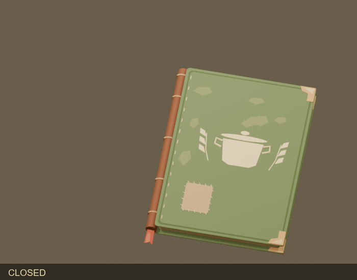

The field cookbook
Modeled from direction A with sample D pages: olive cover, leather spine, raised pot emblem, sewn repairs, paper blocks and a red bookmark. Six actions cover closed/open, opening/closing and both turn directions.

/Game/Mars/Gameplay/PlayerCookbook/StylizedR02. The cookbook is now a persistent physical item with a dedicated first-person reading pose, LMB open/close, Q/E page turns and the existing drop/throw flow.Ck widgets / BookMenu independence
Six Ck page widgets, native Ck rasterizer and zero BookMenu references across50 live assets. Cookbook5/5 with the plugin disabled. Removal notes and verification
Corrected spine and faster page turns
1.5x animation speed. The leaf now lands on the same gutter in both directions. Actual Unreal binding close-ups and final checks
20% larger / raised reading pose
The physical mesh, collision and pickup fit now use 1.2 scale. The open pose rises another 4 cm and the grips sit below the text. Same-view before/after and opening states
Playable Unreal item
In Sandbox, find Item_Cookbook between the rock and ration at (-450, 0, 50). Look at it and click LMB to pick it up. LMB opens or closes the equipped book. Q goes back; E advances. Tap R to drop; hold and release R to throw. Stowing or releasing the item closes it automatically.


These observations inject raw mouse/keyboard events into the real local player's input inbox. Hardware focus and remote multiplayer are not verified by these captures. Integration evidence
Actual Blender renders


Unreal pose checks
Rendered from the imported clips through a compiled explicit-time SequenceEvaluator in an isolated preview scene. These are asset evaluation checks; lighting is the preview scene's lighting.


Verified package
| Property | Result |
|---|---|
| Page size | 17 × 23 cm |
| Authoring closed bound | 19.074 × 26.696 × 2.808 cm including details |
| Geometry / skin | 20,204 triangles; 12 bones; no unweighted vertices |
| Animations / morphs | 6 clips; 4 morphs and 4 float curves per clip |
| FBX round trip | 12/12 checks; 96 cover-arc frames and 216 turn frames tested |
| Page widgets | 6 Ck_UserWidget_UE children across index, recipe and notes; 0 compile errors/warnings |
Final Unreal mesh: .../Meshes/SK_Cookbook_Field. Final clips: .../Animations/Cookbook_*_AS. Files under Validation are diagnostics and preview helpers. Import at scale 1.0.
Page artwork remains illustrative raster content. The model currently uses 20 material sections; atlas consolidation can follow visual acceptance. Gameplay integration adds AngelScript item, presentation, input and opt-in glove geometry. Native build and focused automation passed; detailed final gates are in the integration report. No commits or pushes were made.